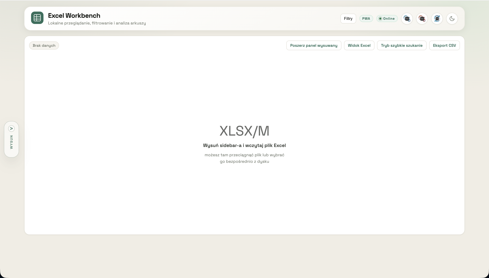

PWA / data tools
Excel Workbench PWA
Lokalny, offline-first workbench do eksploracji i lekkiej obróbki plików Excel bez backendu.
Portfolio / Web & utility projects
Tworzę projekty z pogranicza frontendu, danych i workflow: aplikacje do pracy z Excelem, interaktywne strony, marketplace'y i eksperymenty z analizą kodu.

Najchętniej buduję rzeczy użyteczne: od narzędzi do analizy i pracy z danymi, po strony, które mają wyraźny styl i czytelny cel.
Selected work
PWA / data tools
Lokalny, offline-first workbench do eksploracji i lekkiej obróbki plików Excel bez backendu.
Approach
Szukam realnego problemu albo konkretnego przepływu pracy: czego użytkownik potrzebuje szybciej, prościej albo czytelniej.
Potem dopiero dobieram język wizualny: rytm sekcji, proporcje, ruch i typografię, tak żeby projekt miał charakter, ale nie przeszkadzał w użyciu.
Lubię domykać projekt do wersji, którą da się uruchomić, pokazać online, przetestować i dalej rozwijać.
Profile
Najbardziej interesują mnie projekty, które rozwiązują realny problem: upraszczają workflow, porządkują dane albo przyspieszają codzienną pracę.
Nawet w prostych aplikacjach zależy mi na kompozycji, ruchu, rytmie sekcji i wyrazistej warstwie wizualnej.
Lubię spinać pełną całość: interfejs, logikę, eksport danych, integracje z chmurą i wersję gotową do pokazania online.
GitHub
Kontakt